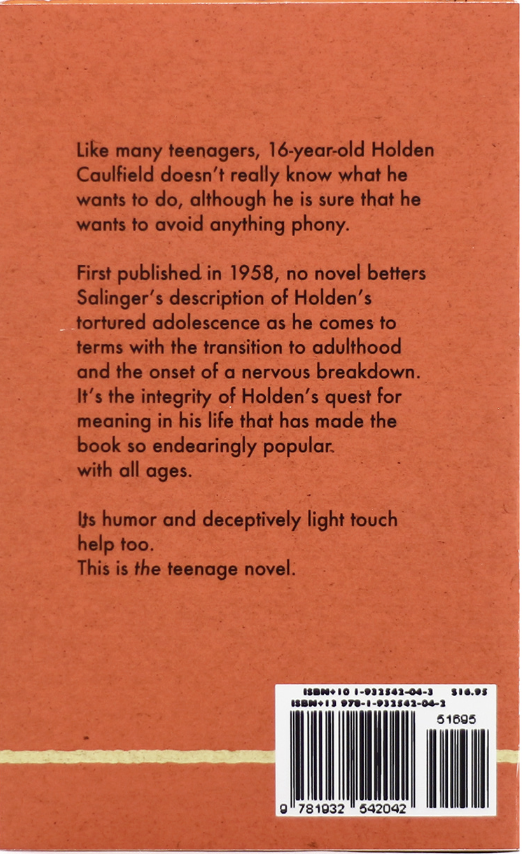
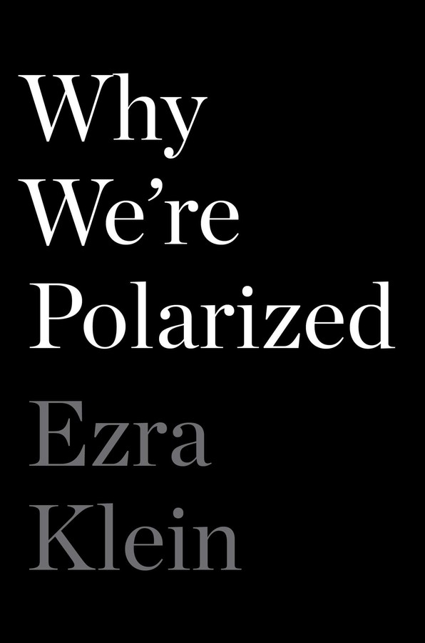
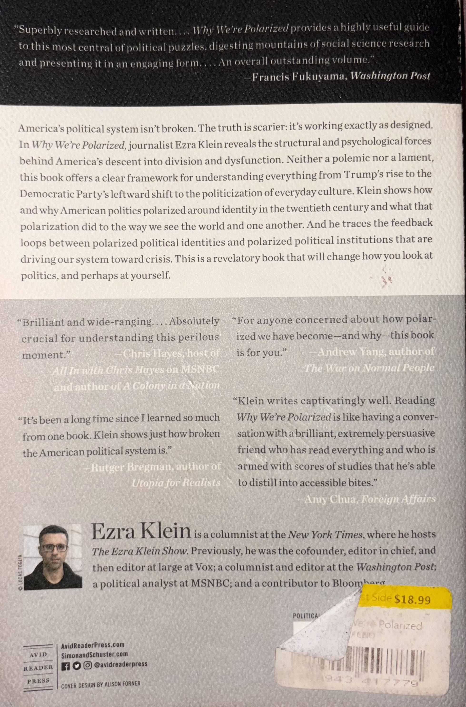
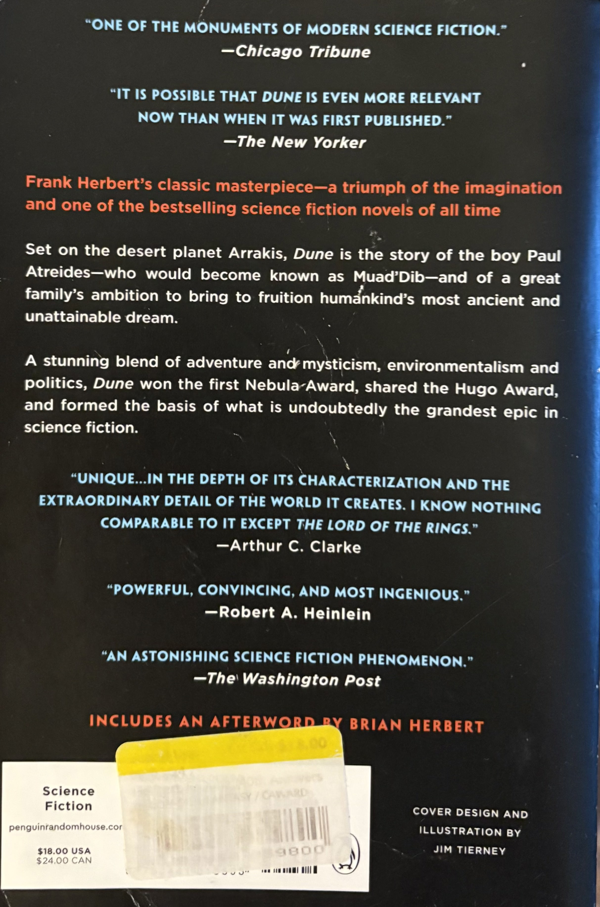
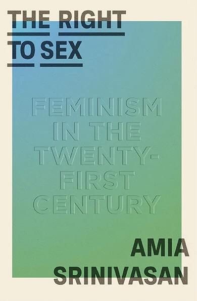
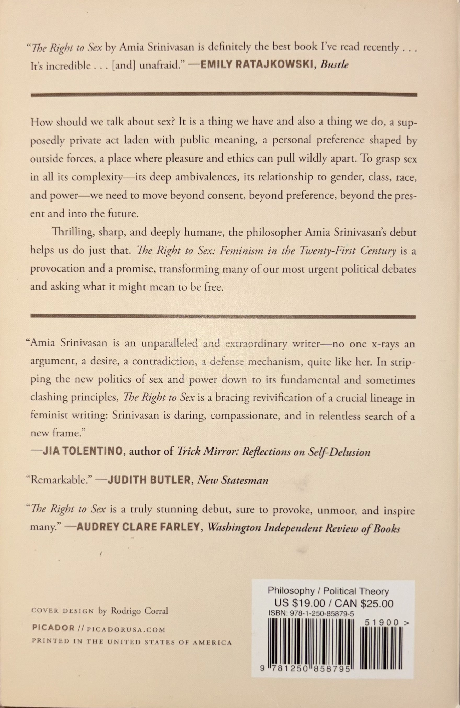
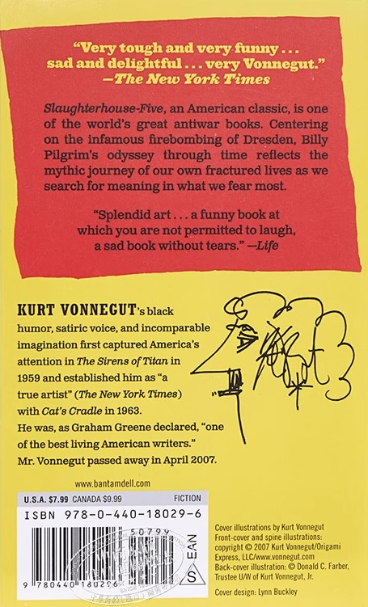

Catcher In The Rye, J.D. Salinger, 1951. I read this book sometime in 2023. I found it to be a pain in the ass becuase the protagonist Holden Caufield, is such a downer, but I think that this book helped me understand my own cynicism down the road. I think this book hold an important role in understanding teenage minds even today.
Why We're Polarized, Ezra Klien, 2020. The summer of 2025, Zohran Mamdani ran for the demoncratic nominee for the NYC mayoral primaries. I began to feel a bit more hopeful, like someone was fighting for what I too belived in. I started engaging heavily with politcs. This book hleped me understand the ways in which the United States goverment functions, in a conceptual way. It gave me important skills to analyze national issues.
Dune, Frank Herbert, 1965. This book made me realize the wonders of science fiction. My Dad loves Dune, it was nice to discuss the book with him. Regardless, I still loved the book on it's own. I love how it takes you out of your own world completley. I like how the themes in Dune are similar to the political tribulations we see today.
The Right to Sex, Amia Srinivasan, 2021. This book introduced me to intersectional feminism on a deeper level. Prior to this book I had only engaged in feminist theroy on a very surface level. It was hard to see myself inside feminism. This book allowed me to see how I relate to the movement, and understnad it on a much more complex level. After reading this book, I went on to read many, many others.
Slaughter House Five, Kurt Vonnegut, 1969. I don't think there are enough words to explain how much this book blew my mind at 16, and how it still does upon each re-read. This book taught me about so much. If you are anti-war. Please read. "Everything was beautiful and nothing mattered." -Kurt Vonnegut